The following notebook is an introductory tutorial describing the
calculation of influence coefficients for the MKS in both real and
Fourier space. In the MKS, the goal is to quickly calculate a response
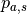 from a microstructure  where 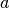
represents different samples and 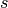 represents the spatial
position. The first step in the MKS is to bin (or discretize) the state
space, 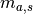, in terms of a new representation,
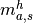, given by,
where 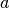
represents different samples and 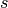 represents the spatial
position. The first step in the MKS is to bin (or discretize) the state
space, 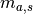, in terms of a new representation,
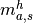, given by,
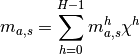
and

where 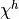 is the basis representation of the state space (microstructure space). 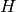 is the size of the state space discretization.
Why do we discretize the microstructure?
Can we represent
When the state space is discretized, the relationship between the response and microstructure can be written as,
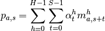
where the are the responses, 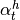 are the
influence coefficients and  is the microstructure.
is the microstructure.
 is the size of the spatial discretization The and
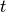 indices run over the spatial discretization, the
index runs over the number of samples and the
is the size of the spatial discretization The and
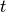 indices run over the spatial discretization, the
index runs over the number of samples and the  index runs over
the microstructure discretization. The goal of the notebook is to
introduce the method for calculating the by
index runs over
the microstructure discretization. The goal of the notebook is to
introduce the method for calculating the by
Why do we discretize the microstructure?
Which type of non-linearities does the first order MKS handle?
Can we represent any PDE in one variable with a high enough order MKS relationship?
In the MKS a sample set of microstructures and responses are required. In this example we will use the Cahn-Hilliard equation to provide the example response. FiPy is used to solve the governing equation, which is given by,
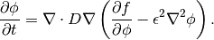
where the free energy is given by,
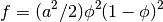
In this example 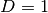, 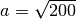 and 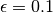. See the FiPy CH example for further details.
The fipy_response function takes an initial field, 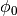 (the microstructure), and yields 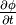 (the response).
%matplotlib inline
%load_ext autoreload
%autoreload 2
import numpy as np
import matplotlib.pyplot as plt
import fipy as fp
The autoreload extension is already loaded. To reload it, use:
%reload_ext autoreload
def fipy_response(phi0, dt, N):
from fipy.solvers.scipy.linearLUSolver import LinearLUSolver
dx = 0.005
a = np.sqrt(200.)
epsilon = 0.1
nx = ny = N
mesh = fp.PeriodicGrid2D(nx=nx, ny=ny, dx=dx, dy=dx)
phi = fp.CellVariable(name=r"$\phi$", mesh=mesh, value=phi0.copy())
PHI = phi.arithmeticFaceValue
D = 1.
eq = (fp.TransientTerm()
== fp.DiffusionTerm(coeff=D * a**2 * (1 - 6 * PHI * (1 - PHI)))
- fp.DiffusionTerm(coeff=(D, epsilon**2)))
eq.solve(phi, dt=dt, solver=LinearLUSolver())
return (np.array(phi) - phi0) / dt
The following cell iterates the fipy_response function to demonstrate the evolution of the microstructure for an initially uniform random field. Using the fipy_response function is quite an inefficient method of using FiPy, but useful for demonstration purposes.
from IPython.display import clear_output
import time
N = 21
np.random.seed(0)
phi0 = np.random.random(N * N)
dt = 1e-8
fig = plt.figure()
for i in range(30):
response = fipy_response(phi0, dt=dt, N=N)
#Euler backward in this case since implicit
phi0 = response * dt + phi0
#print phi0
plt.contourf(phi0.reshape((N,N)))
time.sleep(1)
clear_output()
display(fig)

Using the fipy_response function, we can now create a sample set of microstructures and responses. We create Nsample microstrucures over a 2D space of 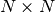. We choose a very small system to first demonstrate the linear regression in real space.
N = 10
Nbin = 6
Nsample = 5
np.random.seed(1)
microstructures = np.random.random((Nsample, N**2))
responses = np.array([fipy_response(M, dt=dt, N=N) for M in microstructures])
print microstructures.shape
print responses.shape
(5, 100)
(5, 100)
The function bin, discretizes the original microstructure,
, into the binned microstructure, ,
given by
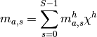
The bin function takes and returns
. Don’t look at it’s code yet, this is the next
exercise.
from pymks import bin
?bin
We can examine three points to see a graphical representation of 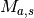 in terms of .
from pymks import draw_microstructure_discretization
for s in range(3):
plt.figure()
draw_microstructure_discretization(microstructures, a=0, s=s)
Run bin for each microstructure and rebuild the array (maybe this operation could be vectorized).
binnedMicrostructures = np.array([bin(M, Nbin) for M in microstructures])
print binnedMicrostructures.shape
(5, 100, 6)
The new binnedMicrostructures, , has a shape of
(Nsample, N*N, Nbin). To double check that the binning worked we can
evaluate 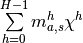 and check
against the original . The summation is over the last
axis (the binning axis).
X = np.linspace(0, 1, Nbin)
reconstructedMicrostructure = np.sum(binnedMicrostructures * X[np.newaxis, np.newaxis, :], axis=-1)
print np.allclose(reconstructedMicrostructure, microstructures)
True
print X
[ 0. 0.2 0.4 0.6 0.8 1. ]
Try and create a binning function. Just use loops to do this and then we will discuss how to vectorize.
Test it with np.array((0.2, 0.5, 0.7)) and Nbin = 4.
If this is too difficult, look at the code, ??bin, and then reproduce this with loops.
??bin
In order to understand how to compute the influence coefficients it is useful to see a demonstration in real space. Although we have a tensor representations of , we need to create an intermediate matrix to calculate the convolution, 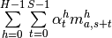. This matrix representation of is given by the microstructureMatrix and has shape (N*N*Nsample, N*N*Nbin). The microstructureMatrix is essentially a circulant matrix that isn’t square.
def rollMatrix(m, N, Nbin):
matrix = np.zeros((N**2, N**2 * Nbin))
for i in range(N**2):
matrix[i] = np.roll(m, -i, axis=0).swapaxes(0,1).flatten()
return matrix
microstructureMatrix = np.concatenate([rollMatrix(m, N, Nbin) for m in binnedMicrostructures])
print microstructureMatrix.shape
(500, 600)
To calculate the influence coefficients, 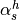, we use numpy‘s lstsq function.
responses = responses.flatten()
coefficients = np.linalg.lstsq(microstructureMatrix, responses)[0]
print coefficients.shape
(600,)
If Nbin > Nsample then we can check that the influence coeffiencts exacly reproduce the responses. The result below should be True for an over-determined system.
print np.allclose(np.dot(microstructureMatrix, coefficients), responses)
True
Having calculated the coefficients for a small system in real space, we
will now calculate a much larger system in Fourier space and then
confirm that a sensible response is reproduced. Calculating the
regression in Frequency space drastically reduces the computational
cost. The size of the regression is reduced from $ (N^2 N_{} N^2 H )$
to  for each point in
reciprocal space
for each point in
reciprocal space  . The convolution,
. The convolution,
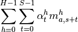
can be deconvolved in Fourier space with,
The above is a proof of the circular convolution
theorem.
If we write 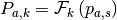,
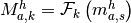 and
 , then we
just need to solve
, then we
just need to solve
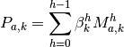
with a linear regression at each discretization location in  to
calculate the
to
calculate the  .
.
In the example below we will create a microstructure with 11 bins and 160 samples. This is enough to give reasonable influence coefficients.
N = 20
Nbin = 11
Nsample = 160
np.random.seed(101)
microstructures = np.array([np.random.random(N**2) for i in range(Nsample)])
responses = np.array([fipy_response(m, dt=dt, N=N) for m in microstructures])
binnedMicrostructures = np.array([bin(m, Nbin) for m in microstructures])
print microstructures.shape
print responses.shape
(160, 400)
(160, 400)
We use numpy‘s fft2 to calculate the 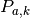 and 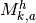.
microstructuresRS = binnedMicrostructures.reshape((Nsample, N, N, Nbin))
responsesRS = responses.reshape((Nsample, N, N))
Fmicrostructures = np.fft.fft2(microstructuresRS, axes=(1, 2))
Fresponses = np.fft.fft2(responsesRS, axes=(1, 2))
Fcoeff = np.zeros((N, N, Nbin), dtype=np.complex)
We calculate at every point in space.
for ki in range(N):
for kj in range(N):
Fcoeff[ki,kj,:] = np.linalg.lstsq(Fmicrostructures[:,ki,kj,:], Fresponses[:,ki,kj] )[0]
reconstructedResponses = np.sum(Fmicrostructures * Fcoeff[np.newaxis], axis=-1)
For a loose check let’s see how close the reconstructed responses are to the sample responses.
from sklearn import metrics
mse = metrics.mean_squared_error
responses = np.fft.ifft2(reconstructedResponses, axes=(1, 2)).real
MSE = mse(responsesRS, np.fft.ifft2(reconstructedResponses, axes=(1, 2)).real)
print 'Mean square error: {0:1.3e}'.format(MSE)
print 'Typical values'
print responsesRS[0,0,:10]
print responses[0,0,:10]
Mean square error: 1.358e+10
Typical values
[ 3134920.24329635 -14859922.85111164 24350855.96847351 16518931.7101288
-13399504.96081172 -20608868.32626785 21532496.27938246
-24030785.28692817 -11643521.47041003 27758619.45859079]
[ 3013635.84 -14692726.82641511 24504455.19776576
16802677.09155771 -13414803.84246958 -20575614.08 21450135.01626968
-23919938.87934423 -11691192.67329024 27626894.75236416]
Test the influence coefficients using one sample.
np.random.seed(103)
test_microstructure = np.random.random(N**2)
test_response = fipy_response(test_microstructure, dt=dt, N=N)
binned_test_microstructure = bin(test_microstructure, Nbin).reshape((N, N, Nbin))
Fm = np.fft.fft2(binned_test_microstructure, axes=(0, 1))
Fr = np.sum(Fm * Fcoeff, axis=-1)
calc_response = np.fft.ifft2(Fr, axes=(0, 1)).real.flatten()
print test_response[:20]
print calc_response[:20]
[ 10321080.57374739 18170943.91955532 21953730.26038766
-27668437.71011165 -1222554.20968084 4850834.021033 -26983622.32046547
-28409259.90543952 5996828.80698766 10823111.24422134
6559197.50876078 -30826019.2029601 -8894200.91717253
-6046499.57272069 -12751789.16653129 33920217.9478319 7588871.20941563
10018364.24439061 2116472.25868405 -25814016.94703518]
[ 10136893.8 18057017.95942609 21878377.34953976
-27708096.82038447 -1299137.4447629 4855990.40000001
-26852174.36448368 -28324788.67386933 6094005.82172765
10782186.63208983 6469447.32 -30907790.79029018
-9013656.85033033 -6133981.44410236 -12830583.26266264
33932517.76000001 7771430.67336559 10094396.05258644
2064878.55760657 -25968923.07545603]
Let’s view the influence coefficients in real space.
coeff = np.fft.ifft2(Fcoeff, axes=(0, 1)).real
plt.figure()
plt.title(r'$\beta_s^0$', fontsize=18)
plt.contourf(coeff[:,:,0])
plt.colorbar()
plt.figure()
plt.title(r'$\beta_s^1$', fontsize=18)
plt.contourf(coeff[:,:,1])
c = plt.colorbar()
Doesn’t look good. The influence coefficients should die off away from the origin.